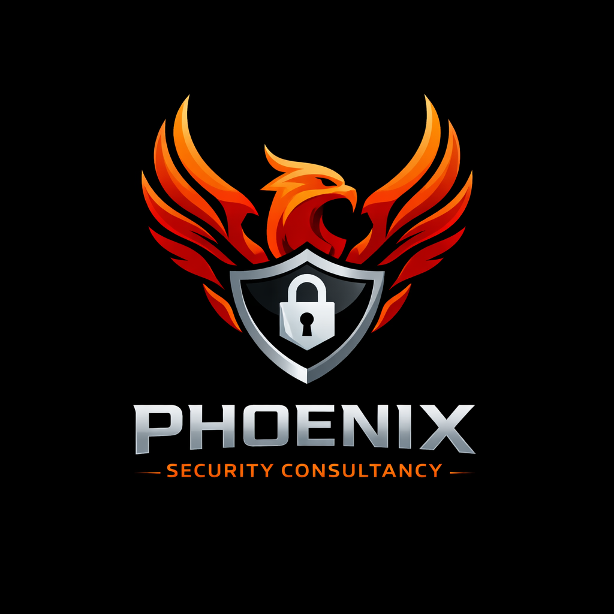

Professional security advisory, documentation, and compliance solutions for safer, smarter organizations.
Phoenix Security Consultancy delivers practical, real-world security advisory and training services for organisations across Singapore. We specialise in SOP development, documentation systems, compliance audits, incident readiness, and operational security assessments. Our approach is grounded in clarity, professionalism, and operational realism, ensuring your security framework is both compliant and effective.
Email: Company Email
LinkedIn: Company Page